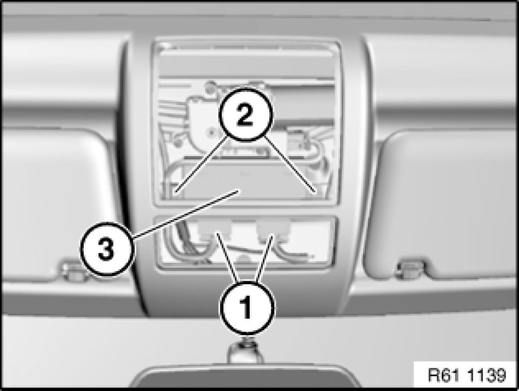
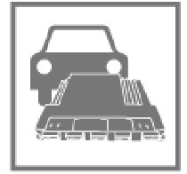

Sunroof / Moonroof Module: Service and Repair
61 35 714 - Removing and installing/replacing control unit for slide/tilt sunroof

Important!
Read and comply with notes on protection against electrostatic damage (ESD protection) 61 35 ... Notes on ESD Protection (Electro Static Discharge).

Necessary preliminary tasks:
- Remove front roofliner trim 51 44 ... - Removing and installing front roofliner trim
- Remove complete ceiling light (front) Service and Repair

Note:
Secure drive for slide/tilt sunroof (3) against falling out.
Release screws (2).
Lower control unit for slide/tilt sunroof (3).
Unlock and disconnect plug connections (1) and remove control unit for slide/tilt sunroof (3).
Installation Note:
- Initialize slide/tilt sunroof Testing and Inspection.

Replacement:
Carry out programming/coding Programming and Relearning.
Important!
There is a risk of permanent battery discharge if programming/coding is not carried out!